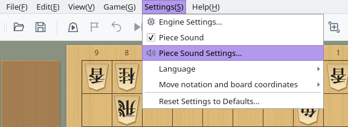
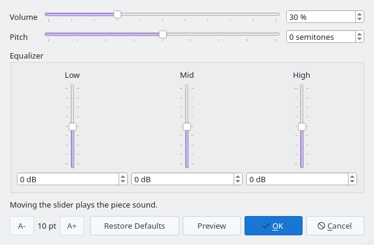

Piece Sound
A crisp click plays the moment a piece lands on the board
Screenshots were captured on Linux with the English interface.
Turn the Piece Sound On or Off
Toggle the sound at any time from the Settings menu
The Settings menu in the menu bar contains Piece Sound. When it is checked, the sound plays with every move. It is on by default, and each time you choose it, it switches between on and off.


Settings menu: Piece Sound turns the sound on or off, and Piece Sound Settings… adjusts it
The on/off state is saved automatically and used the next time you start the application. The Settings tab of the menu dock has the same Piece Sound and Piece Sound Settings… buttons.
Adjust Volume and Tone
Piece Sound Settings controls the volume, pitch, and a three-band equalizer
The dialog shows horizontal sliders for Volume and Pitch, and vertical Low, Mid, and High sliders under Equalizer. When you release a slider, the sound plays with the current settings, so you can tune it by ear. Click Preview to hear the current sound at any time (it plays even when the piece sound is off).


Piece Sound Settings dialog (default values)
- Volume: 0–100%, 30% by default. The scale follows how loudness is perceived.
- Pitch: −12 to +12 semitones. Raising it gives a higher, shorter sound; lowering it gives a deeper, longer one.
- Equalizer: Low, Mid, and High from −12 to +12 dB each. Boosting Mid adds punch; cutting High makes the sound softer.
You can also type a value in the box to the right of or below each slider.
Click OK to keep your changes. Cancel returns to the settings that were in effect when the dialog opened. Restore Defaults resets the sound to 30% volume with pitch and equalizer at 0. Confirmed settings are saved automatically and used the next time you start the application.
Use A- and A+ at the bottom left to change the dialog's text size. The text size and the dialog size are also kept for next time.
When the Piece Sound Plays
It plays when a piece moves on the board in a game, not while browsing a game record or editing a position
| Situation | Sound | Notes |
|---|---|---|
| Human move | Plays | Your moves in human vs. human and human vs. engine games |
| Engine move | Plays | Engine moves in human vs. engine and engine vs. engine games |
| Network game (CSA) | Plays | Both your moves and your opponent's moves |
| Opening book move | Plays | Moves played from the Opening Book Window count as board moves |
| Tsume shogi play | Plays | Both your moves and the defender's replies. Replaying the moves with the Solution button is silent |
| Game record playback and branch switching | Silent | Moving forward or back through a loaded game record |
| Position editing, analysis, consideration, and mate search | Silent | Rearranging pieces or showing engine lines |
The sound was synthesized to match an analysis of recorded piece sounds. It plays through Qt Multimedia on the operating system's default audio output.